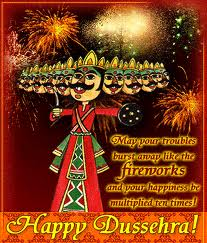

Dussehra

Whenever we think of India we think as a land of festivals. Every festival in India epitomizes the social, cultural and religious aspirations of the people. Every festival brings with it few days of happiness and joy in the life of the people. Navratri, or 'The Festival of Nine Nights', is celebrated during the first nine days of the Hindu month of Ashvin (September-October). The festival is dedicated to the worship of Mother Goddess or Shakti and her nine forms. This season is considered to be an auspicious one as it is generally associated with the sowing of seeds. People sow seeds on the first day, consecrate the planets, watch the sprouting and worship Goddess Durga during this festival. The last three days are especially considered most important. The nine-day is equally divided in worshiping three goddesses. The first three days are dedicated to Goddess Durga. The next three days are spent in worshipping goddess Lakshmi and the last three days are dedicated to Goddess Saraswati. The day after Navratri the festival of Dussehra is celebrated.
The festival of Navratri acquires quite a fascinating and colorful dimension in the region of Gujarat, and in some parts of Rajasthan and Maharashtra. The highlights of the festival are the extremely colorful dances of Garbha and Dandiya-Rasa where men and women of all sects perform. The Rasa has its origin in the life scenes of Lord Krishna and is associated with the agricultural rites while Garba is performed only by men and is related with the fertility cult or the mother aspect of Navratri. In the south, Dusshera is very popular while in the east, the seventh to the tenth days of Durga Puja are celebrated with much vigor and enthusiasm. Besides the Garba Dance of Gujarat, the most popular events on the auspicious occasions of Navratri are Ramlila of Varanasi, Dussehra of Mysore and Durga Puja of Bengal. All these celebrations have a special significance according to their region. The rituals are based according to the culture and traditions of that particular region.